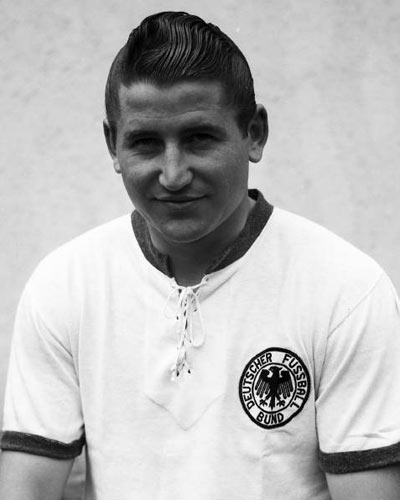

Raymond KOPA - 1958
- Kopa admirant son trophée
En 1958, le madrilène
Raymond Kopa
devient à 27 ans le premier Français à remporter le Ballon d'Or France Football.
Nationalité : Française
Né le 13 octobre 1931, à Noeux-les-Mines (Pas-de-Calais)
Décédé le 03 mars 2017, à Angers (FRA)
Taille : 1,69
Poids : 67 kg
Poste : milieu
Clubs : Noeux-les-Mines (1944-1949), Angers (1949-1951), Reims (1951-1956), Real Madrid (1956-1959) et Reims (1959-1967)
Palmarès : Coupe des champions 1957, 1958 et 1959 ; Coupe latine 1953 et 1957 ; Championnat de France 1953, 1955, 1960 et 1962; Championnat d'Espagne 1957 et 1958
Bilan en clubs : 616 matchs, 141 buts
Bilan en équipe de France : 45 sélections A, 18 buts (1952-1962)
Bilan en phase finale de Coupe du monde : 2 participations (3e en 1958), 8 matches, 4 buts (1954-1958)
Palmarès Ballon d'Or : vainqueur en 1958 (2e en 1959 ; 3e en 1956 et 1957)
Classement du Ballon d’Or France Football 1958 :
Raymond Kopa (France / Real Madrid),
71 pts.

Helmut Rahn (RFA / Rot-Weiss Essen),
40 pts.
Just Fontaine (France / Reims),
23 pts.
Retour à l'accueil